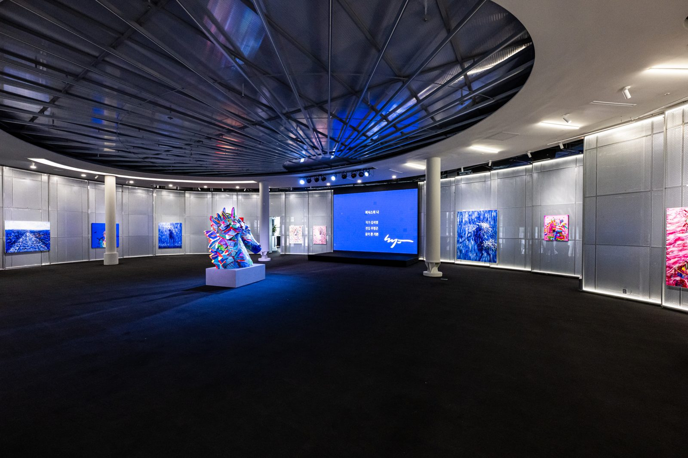

Exhibition Archive · Sevit Islands
Anniversary
Museum
한강 위 세빛섬 채빛섬 1층, 애니버셔리에서 열린 전시를 모았습니다.
Exhibitions held at Anniversary, ground floor of Chaevit Island, Sevit Islands on the Han River.
연회장이 전시장이 되는 곳
Where a banquet hall becomes a gallery
원형 메인홀과 LED 월, 한강 통창의 리셉션홀, 대리석 문 너머의 갤러리. 2023년 개관 기념전 「Colorful Fortune」부터 미디어 아트, 황란 · 자이언제이 · 김석영 작가의 전시까지 이 공간에서 실제로 열린 전시만 기록했습니다.
A round Main Hall with LED walls, a Reception Hall lined with river windows, and a Gallery behind a marble doorway. This archive records only exhibitions that actually took place here, from the 2023 opening show “Colorful Fortune” and media art to exhibitions by Ran Hwang, ZIONJ and Kim Seokyoung.
10전시 기록exhibitions
3전시 공간spaces
22×17메인홀 (m)Main Hall (m)
- 황란 × 크리스공 「Ascent to Eternity, a Requiem」Ran Hwang × Chris Kong: Ascent to Eternity, a Requiem작가전Artist Exhibition
- 「Lumière on Han River」Lumière on Han River작가전Artist Exhibition
- 김석영 개인전 「Flowing river」Kim Seokyoung: Flowing river작가전Artist Exhibition
- 김민경 초대전 「Colorful Fortune」Kim Minkyung: Colorful Fortune작가전Artist Exhibition
- 3색 K-ART 페스타 – 민화 · 나전 · 도자기3-Colour K-ART Festa: Minhwa, Najeon & Ceramics작가전Artist Exhibition
- 자이언제이 초대전 「BE YOU TIFUL」ZIONJ: BE YOU TIFUL작가전Artist Exhibition
- 조영남 「이 망할 놈의 현대미술」Cho Young-nam: This Damn Contemporary Art작가전Artist Exhibition
- BTS 지민 생일 기념 「JIMIN SEOM」BTS Jimin Birthday: JIMIN SEOM브랜드 · 기념 전시Brand & Commemorative
- 웨딩드레스 브랜드 전시Bridal Gown Exhibition브랜드 · 기념 전시Brand & Commemorative
- 게임 5주년 원화 · 사인 전시Game 5th Anniversary Art Exhibition브랜드 · 기념 전시Brand & Commemorative
3색 K-ART 페스타 – 민화 · 나전 · 도자기3-Colour K-ART Festa: Minhwa, Najeon & Ceramics2024.6.4 – 6.9
조영남 「이 망할 놈의 현대미술」Cho Young-nam: This Damn Contemporary Art~ 2023.11.19
Exhibition Spaces
전시가 열린 세 개의 공간
Three spaces, one floor
메인홀
Main Hall
22 × 17 m
방사형 천장 · 3면 LED 월 · 대형 설치 전시
Radial ceiling, three-sided LED wall, large installations
리셉션홀
Reception Hall
≈ 318 ㎡
한강 통창 · 칵테일 바 · 패널 · 부스 전시
River windows, cocktail bar, panels and booths
갤러리
Gallery
96.18 ㎡
사진 · 아카이브 전시
Photography and archives
Visit & Contact
전시 대관 문의
Host your exhibition
Instagram @anniversary_museum ↗ 애니버셔리홀 홈페이지Anniversary Hall website ↗- Address
- 서울 서초구 반포동 650 세빛섬 채빛섬 1층 애니버셔리Anniversary, 1F Chaevit Island, Sevit Islands, 650 Banpo-dong, Seocho-gu, Seoul
- Subway
- 고속터미널역 6번 출구Express Bus Terminal Stn., Exit 6
- Parking
- 세빛섬 주차장 · 행사 시 3시간 무료Sevit Islands car park, 3 hours free for events
- Tel
- 02-537-2440
- 010-6715-3458
- anniversary.kr@gmail.com
- @anniversary_museum